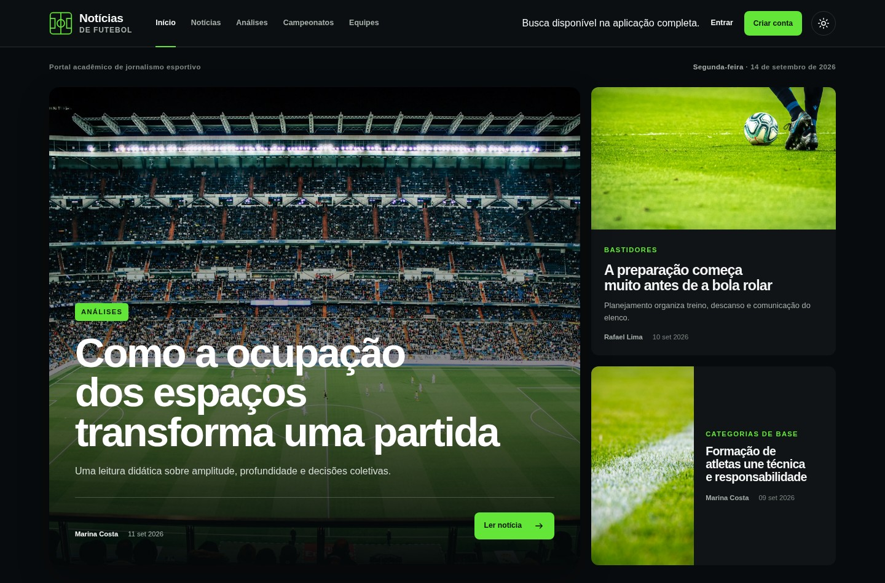
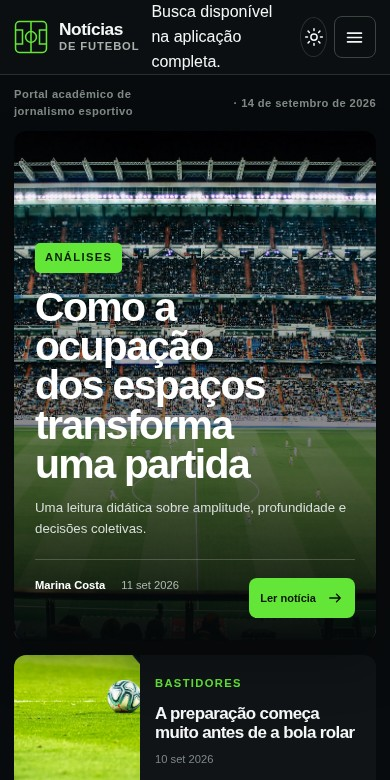

NexusFC.
Futebol em perspectiva. Do conteúdo ao sistema.
NexusFCInterface web


O desafio
Construir um portal que reúna a experiência de leitura e a estrutura necessária para gerenciar notícias e perfis de acesso.
A construção
Aplicação PHP com MVC, autenticação, perfis de usuário e painéis de gerenciamento. O conteúdo é armazenado em MySQL/MariaDB e consultado por modelos com consultas preparadas.
O resultado
O repositório reúne a aplicação e as instruções de instalação no XAMPP. Aqui é possível explorar uma cópia do protótipo visual; as notícias são ilustrativas e os recursos do backend não estão ativos nessa demonstração.
Disponível para novos projetos